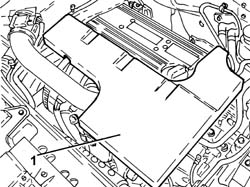
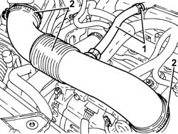
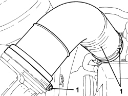

1048A34 SLEEVE(S) FROM FLOW METER TO AIR SUPPLY CAPACITY CASE - R + R
- Path
- Procedures > 10 ENGINE > 1048 ENGINE AIR SUPPLY CIRCUIT > 1048A VACUUM AIR CIRCUIT > 1048A34 SLEEVE(S) FROM FLOW METER TO AIR SUPPLY CAPACITY CASE - R + R
- Kind
- repair procedure (removal / refitting; the operation number is the code)
- Applies to
- engines: 1.8, 2.2; all production periods
- Interactive page
- https://sloeber94.github.io/elrnDB-fCrm/en/#/194000306
Applies to: engines: 2.2; all production periods
 Removing
Removing
 Refitting
Refitting- Position the vehicle on a lift.
1. Remove the soundproof cover secured to the engine by three pins.

Applies to: engines: 2.2; all production periods
1. Loosen the band and disconnect the engine oil vapour recovery pipe from the cylinder head cover.
2. Loosen the bands and remove the sleeve from the air flow meter to the throttle body.

Applies to: engines: 2.2; all production periods
Refitting
Removing- Replace the sleeve from the air flow meter to the throttle valve in its housing and tighten with the bands.
- Connect the engine oil vapour recovery pipe to the cylinder head cover and secure it using the band.
- Refit the soundproofing cover in its seat and secure to the engine with the three pins.
- Remove the vehicle from the lift.
Applies to: engines: 1.8; all production periods
Removing
Refitting1. Loosen the bands and remove the hose from the flow meter to the air intake chamber.

Applies to: engines: 1.8; all production periods
Refitting
Removing- Place the hose from the flow meter to the air chamber back in its housing and secure it using the bands.